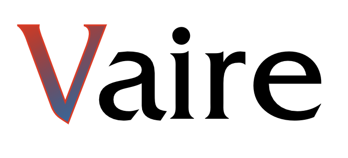

RC2022
14th International Conference on
Reversible Computation (RC)
July 5 - July 6, 2022, Urbino, Italy
Reversible Computation (RC)
July 5 - July 6, 2022, Urbino, Italy
Accepted Papers
Accepted Papers
- Alexis De Vos. Reversible computation in integrated photonics.
- Pietro Lami, Ivan Lanese, Jean-Bernard Stefani, Claudio Sacerdoti Coen and Giovanni Fabbretti. Reversibility in Erlang: Imperative Constructs.
- Niklas Deworetzki and Uwe Meyer. Designing a Reversible Stack Machine (WiP)
- Torben Ægidius Mogensen. Fast Control for Reversible Processors
- Giacomo Maletto and Luca Roversi. Certifying algorithms and relevant properties of Reversible Primitive Permutations with Lean
- Clément Aubert. Concurrencies in Reversible Concurrent Calculi.
- Hannah Earley. The Aleph-Calculus (WiP)
- Riccardo Romanello, Carla Piazza, Brian Riccardi and Davide Della Giustina. Directed Graph Encoding in Quantum Computing supporting Edge-Failures
- Shohei Kuroda and Shigeru Yamashita. Optimization of Quantum Boolean Circuits by Relative-Phase Toffoli Gates (WiP)
- Takashi Ikeda and Shoji Yuen. A Reversible Debugger for Imperative Parallel Programs with Contracts (WiP)
- Mikkel Kragh Mathiesen, Robin Kaarsgaard and Fritz Henglein. Algeo: An Algebraic Approach to Reversibility
- Stefan Hillmich, Lukas Burgholzer, Florian Stögmüller and Robert Wille. Reordering Decision Diagrams for Quantum Computing Is Harder Than You Might Think
- Kamila Barylska, Anna Gogolinska, Łukasz Mikulski, Anna Philippou, Marcin Piątkowski and Kyriaki Psara. Formal Translation from Reversing Petri Nets to Coloured Petri Nets (WiP)
- Lia Yeh and John van de Wetering. Constructing all qutrit controlled Clifford+T gates unitarily
- James Hoey and Irek Ulidowski. Towards Causal-consistent Reversibility of Imperative Concurrent Programs
- Niklas Deworetzki, Martin Kutrib, , Uwe Meyer, and Pia-Doreen Ritzke. Optimising reversible programs
Important dates :
Abstract submission:
February 28, 2022 (EXTENDED)
Submission deadline:
February 28, 2022 (EXTENDED)
Notification to authors:
April 10, 2022 (EXTENDED)
Final version:
April 25, 2022
Conference:
July 5 - July 6, 2022
Abstract submission:
February 28, 2022 (EXTENDED)
Submission deadline:
February 28, 2022 (EXTENDED)
Notification to authors:
April 10, 2022 (EXTENDED)
Final version:
April 25, 2022
Conference:
July 5 - July 6, 2022
Program Chairs:
Claudio Antares Mezzina
University of Urbino, Italy
Krzysztof Podlaski
University of Łódź, Poland
Claudio Antares Mezzina
University of Urbino, Italy
Krzysztof Podlaski
University of Łódź, Poland
Sponsors:

